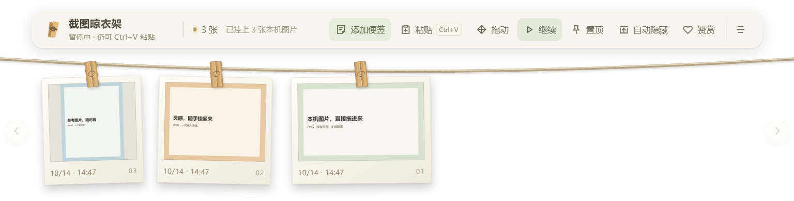
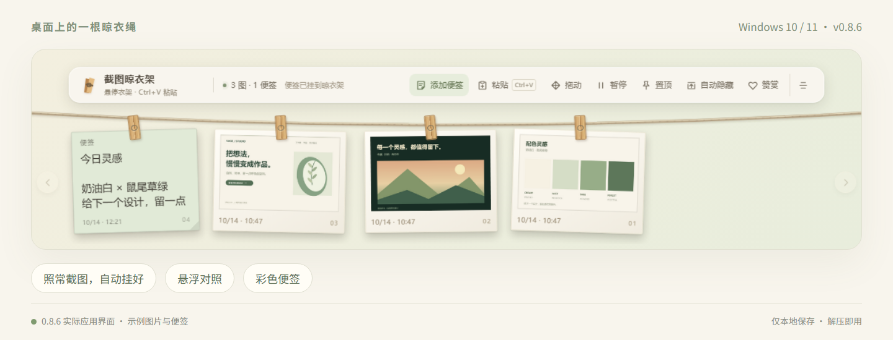
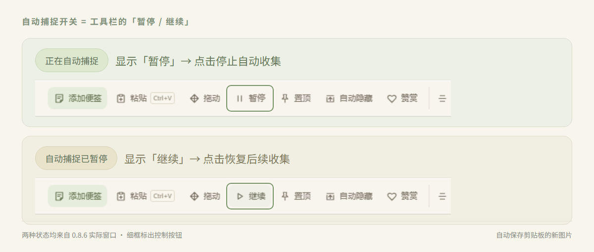
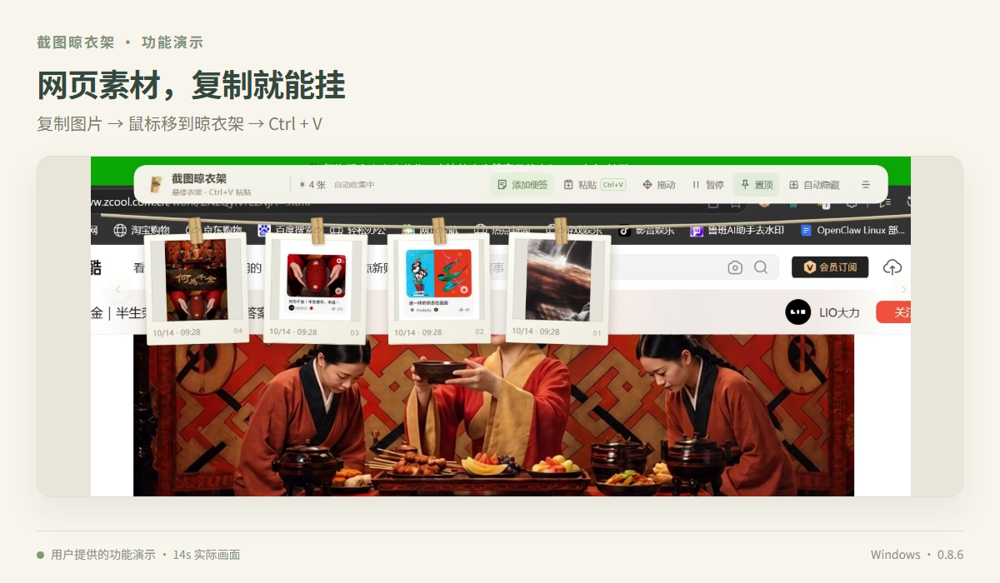
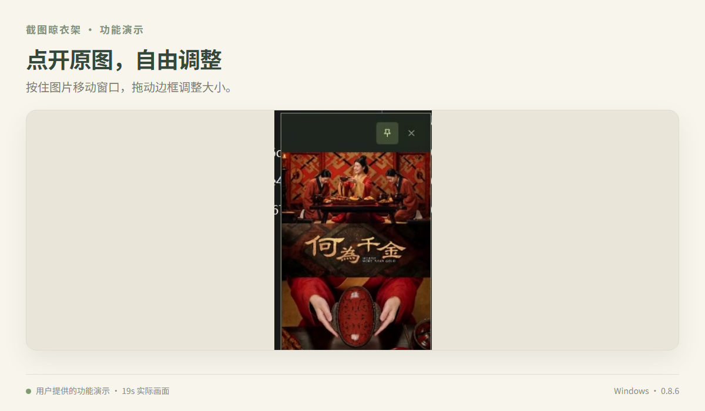
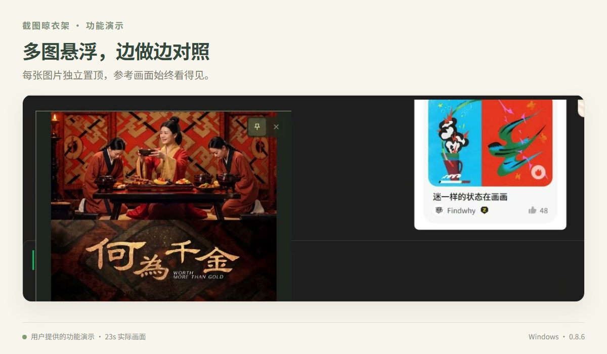
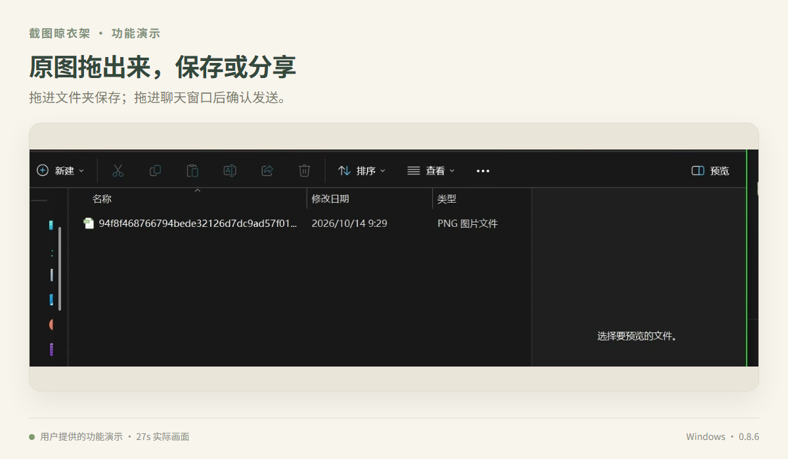
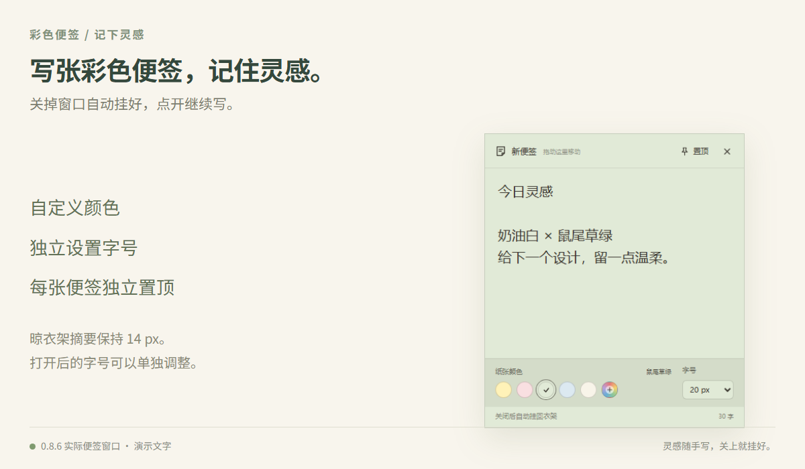
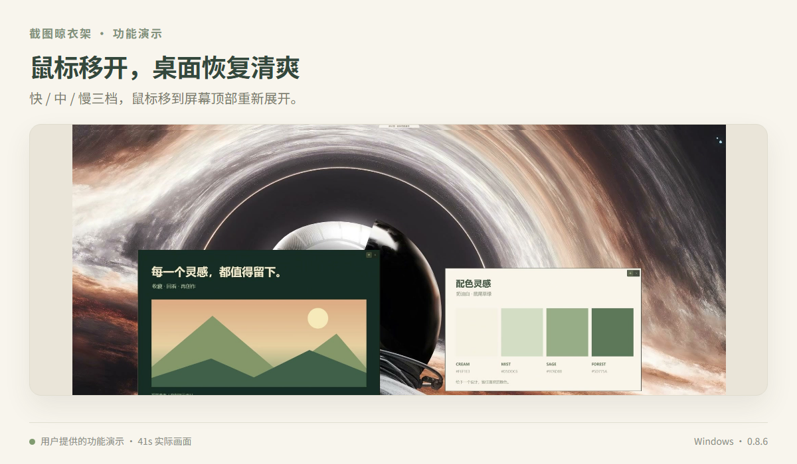

0.8.7 新增 · 本机图片
本机图片，拖进来就挂。
从文件夹选中一张或多张图片，拖到展开的晾衣架上，松开即可添加。
支持 PNG、JPG/JPEG、WebP。暂停时也能拖入；保留原文件，预览与拖出使用原图。
A LITTLE SPACE FOR YOUR IDEAS
自动挂图、悬浮对照、彩色便签，
让需要的内容随时看得见。
Windows 10 / 11 x64 · 完整解压后双击运行 · 无需安装 Node.js

使用 Windows 或微信等截图工具截图后，只要新图片进入剪贴板，晾衣架就会自动保存并挂上。复制网页图片也可以自动收集。

看按钮文字，就知道现在的状态
| 按钮显示 | 当前状态 | 点击后 |
|---|---|---|
| 正在自动捕捉 | 停止自动收集新图片 | |
| 自动捕捉已暂停 | 恢复收集后续新图片 |
启动或恢复收集时，会跳过剪贴板已有图片；重复图片不会反复挂上。
截图晾衣架功能演示_0.8.6OK.mp40.8.6 功能演示 · 原内容与配音保留
看参考、存素材、记待办。把原本散落在窗口里的内容，挂到一个随时能看见的地方。

从文件夹选中一张或多张图片，拖到展开的晾衣架上，松开即可添加。
支持 PNG、JPG/JPEG、WebP。暂停时也能拖入；保留原文件，预览与拖出使用原图。

右键选择「复制图片」，把鼠标移到晾衣架，按 Ctrl + V。
自动捕捉开启时，图片可能提前挂上；暂停后也能手动粘贴。

点一下图片就能打开。按住图片移动窗口，拖动四边或四角调整大小。
1 像素细边框，图片按比例适应；滚轮也能同步缩放图片和窗口。

右键图片选择「悬浮」，多张图片分别置顶、移动，参考内容一直在手边。
每个窗口独立控制。关闭窗口保留照片，衣架收起也不影响悬浮图。

拖进文件夹保存，拖进微信等支持图片拖放的聊天窗口后，再确认发送。
拖出的是保存的原图文件，保留图片尺寸，不用缩略图代替。

点击「添加便签」，写下想法或待办。关掉编辑窗口，就自动挂好了。
支持自定义颜色、字号与独立置顶；衣架摘要固定 14px，多张便签可同时打开。

开启「自动隐藏」，离开后收起；想再看，把鼠标移到对应屏幕顶部。
快：立即收起 · 中：1 秒 · 慢：2 秒。图片已打开或置顶时仍能自动隐藏。
Windows 10 / 11 x64，无需安装 Node.js。
下载免安装 ZIP，解压到你的软件目录。程序和旁边的依赖文件一起保留。
打开「截图晾衣架.exe」。已有旧版在运行时，先从托盘退出旧版。
用 Win + Shift + S 或微信截图，让新图片进入剪贴板。
从文件夹选中 PNG、JPG/JPEG 或 WebP 图片，拖到展开衣架的工具栏、绳子或卡片区域。可以多选，暂停时也能导入。保存的是独立副本，来源文件保留不变。
这个按钮显示的是你下一步能做的操作：显示「暂停」说明正在自动捕捉；显示「继续」说明已经暂停。截图仍使用你熟悉的 Windows、微信等工具。
自动捕捉会收集剪贴板中的新图片，所以复制后可能自动挂上。想手动添加，先点「暂停」，然后悬停衣架按 Ctrl+V 或点击「粘贴」。请选「复制图片」，复制图片地址、文字或文件路径不能直接挂图。
只保存在本机，不上传云端。应用数据目录是 %APPDATA%\screenshot-clothesline，原图在其 photos 子目录，目录中也保存缩略图、便签记录和设置。重启后继续保留。
在 Windows 资源管理器地址栏输入上面的路径即可打开。关闭预览不删图片；右键「删除」会永久移除对应内容及缓存。
不会。衣架、图片预览和便签是独立窗口。开启自动隐藏后，鼠标离开衣架就按选定档位收起，已打开或置顶的图片继续显示。
衣架只加载小缩略图，减少日常显示的图片解码开销。点击、悬浮和拖出使用保存的原图，不降低原图尺寸。运行内存也会随图片大小和同时打开的窗口数量变化。
# 项目目录中执行
npm ci
npm start
# 验证与打包
npm test
npm run dist
感谢你的支持。赞赏自愿，所有功能照常使用。